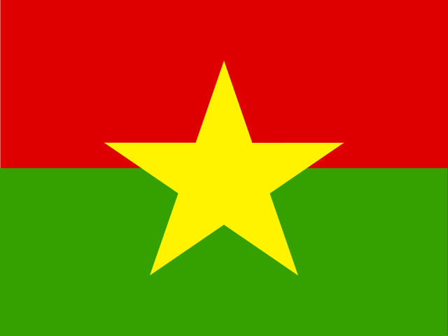
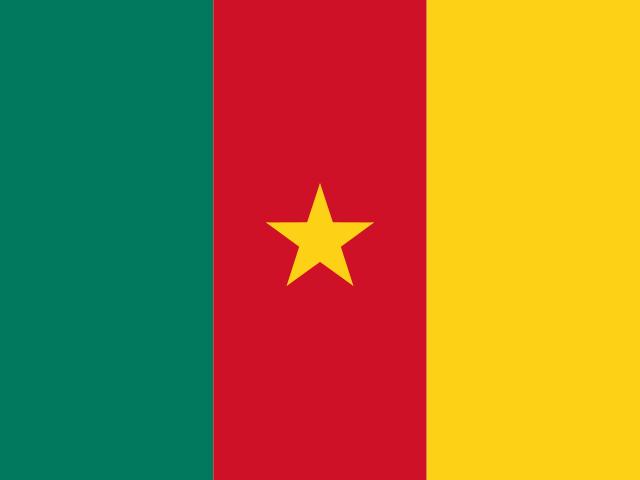
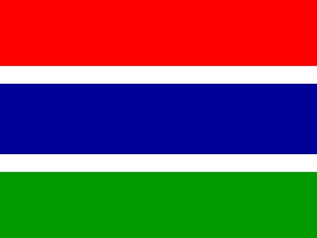
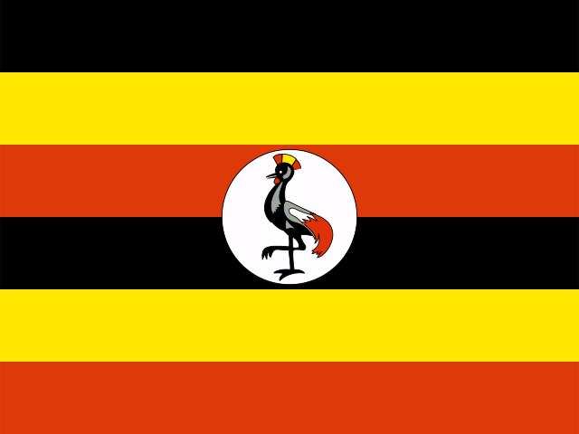

🐾 世界の生きもの
動物ごとに、生息する国々をめぐります。

アフリカゾウ
African elephant / 哺乳類
EN・危機
📖 説明
アフリカゾウはサハラ以南アフリカに広く分布する陸上最大の哺乳類で、体温調節に役立つ大きな耳と、4万~6万本もの筋肉を持つ器用な鼻が特徴である。サバンナの疎林から乾燥した低木地、熱帯雨林まで多様な環境に適応しており、2021年のIUCN再評価によりサバンナに生息する種(危機)と中央・西アフリカの森林に生息する種(深刻な危機)の2種に分けられた。南アフリカや中央アフリカ共和国、コートジボワールなど複数の国の紋章にも描かれている。
🌍 生息国(25か国)

アンゴラ
Angola

ブルキナファソ
Burkina Faso

ベナン
Benin

ボツワナ
Botswana

中央アフリカ共和国
Central African Republic

コートジボワール
Cote d'Ivoire

カメルーン
Cameroon

ガーナ
Ghana

ガンビア
Gambia

ギニア
Guinea

ケニア
Kenya

マリ
Mali

マラウイ
Malawi

モザンビーク
Mozambique

ナミビア
Namibia

ニジェール
Niger

ナイジェリア
Nigeria

南スーダン
South Sudan

チャド
Chad

トーゴ
Togo

タンザニア
Tanzania

ウガンダ
Uganda

南アフリカ
South Africa

ザンビア
Zambia

ジンバブエ
Zimbabwe
出典: https://en.wikipedia.org/wiki/African_elephant(2026-08-31時点)